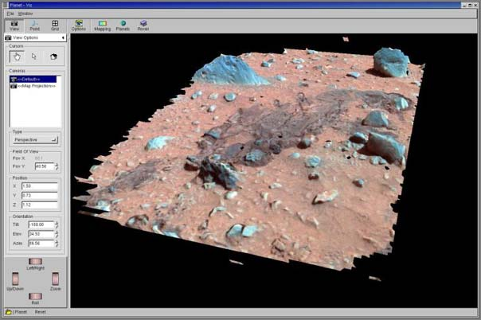

01.29.2004 12:00
Bear hair, MER - Flight computer
Lion Hair
- That's to Peter S. for this article. Not much progress lately on
"Project Bear Hair," but it's not forgotten!
MER Electronics - A bit fluffy, but it does describe some of what is on Spirit and Opportunity in terms of computing resources.
MER Electronics - A bit fluffy, but it does describe some of what is on Spirit and Opportunity in terms of computing resources.
... At the nerve center of each MER rover is a 6-by 9-inch electronics board containing one computer responsible for every process that goes into a mission, whether it be monitoring spacecraft health in transit, deploying parachutes during landing or roving about the red planet. The computer, called a RAD6000, is a tried and true component for NASA space mission that has formed the brains of past Mars missions in the, as well as the recent Stardust comet encounter. ... RAD6000 microprocessors are radiation-hardened versions of the PowerPC chips that powered Macintosh computers in the early 1990s, with 128 megabytes of random access memory (RAM) and capable of carrying out about 20 million instructions per second. A critical feature of the spaceworthy chips -- developed jointly by BAE systems, JPL and the Air Force Research Laboratory -- is the radiation shielding, which uses a series of resistors and capacitors to ground harmful radiation before it can damage onboard electronics. ... Since the MER rovers are much larger than Sojourner, with missions planned to last almost three times as long, JPL engineers added another 256 megabytes of "flash" memory - the same type used to store pictures in digital cameras - to hold more mission data. Altogether, each MER robot has more than 1,000 times the memory capacity as Sojourner. ...Just have to say that the virus this week totally sucked. Not that I have any windows machines to worry about, but it really beat up the JPL network and DNS servers right as I was trying to get some images to NASA HQ ASAP. Virus writers suck.
01.28.2004 12:00
MER - Apollo 1 hills
pchdtv - HDTV tuner card for linux,
but no Windows drivers!
Yesterday, we release the Apollo 1 Hills stuff. Stay tuned for more names. This morning was some great images of airbag impressions on the soil. You can see all the ribs. Aurelio cut a frame out of an AVI from the air bag tests done in vacuum at NASA Glenn. Then I created the two image pair (woo hoo... pushing my Photoshop skills). It is amazing how detailed the ribs look.
There is cable tie that came off the craft on the dirt to the left of the NASA Meat Ball/US Flag/Pres Signature. It shows up as a white dot in the top right of PIA05150.
PI == Planetary Image Archive == Photo Image
Today's press conference was delayed 20 minutes because Aerosmith was talking to the space station.
Yesterday, we release the Apollo 1 Hills stuff. Stay tuned for more names. This morning was some great images of airbag impressions on the soil. You can see all the ribs. Aurelio cut a frame out of an AVI from the air bag tests done in vacuum at NASA Glenn. Then I created the two image pair (woo hoo... pushing my Photoshop skills). It is amazing how detailed the ribs look.
There is cable tie that came off the craft on the dirt to the left of the NASA Meat Ball/US Flag/Pres Signature. It shows up as a white dot in the top right of PIA05150.
PI == Planetary Image Archive == Photo Image
Today's press conference was delayed 20 minutes because Aerosmith was talking to the space station.
01.27.2004 12:00
MER
Apollo 1 Hills
Check out Aurelio's weblog: OneSipMan
Some more Viz / Stereopipeline products went out today. Woo hoo. I definitely enjoy setting up those for scan converting by Shigeru (the HDTV master).
Check out Aurelio's weblog: OneSipMan
Some more Viz / Stereopipeline products went out today. Woo hoo. I definitely enjoy setting up those for scan converting by Shigeru (the HDTV master).
01.25.2004 12:00
MER
Amazing.... wow. Couldn't have asked
for a more exciting site. Finally some outcrop! I lost the landing
ellipse bet by quite a bit. My pick (number 59) was west and south
of the center. check out photojounal for some
released pan cam images. We always get told not to expect much from
downlinks, but this time we expected piles of images to come down.
Things were much less hectic for the 2nd landing this year. Can't
wait to get driving off in this area!
01.24.2004 12:00
Opportunity lands on Mars
11:35
Woo hoo! Mer-B (opp) is on the ground. Next downlink is at 1 AM for a 2:30 am press conference. Things have mellowed out on the 264 6th floor. The press conference just ended. I'm hoping for some great images in an hour and a half and then some sleep. I've got to take out my contacts soon. It's been a long but exciting day. Last time the first image down was a haz cam of the wheels in the stowed position. That should be the same first image. Then hopefully some good nav cam wide angle images from up high.
Landed on the Y petal so the airbags will be puffier with the lander sitting higher.
8:20PM
We're getting close to landing. I was in mission control about two hours ago and it was crazy. Lot's of VIPs. The CA gov is there. I setup a laptop showing an SVG slide show designed by Steve L in the NASA VIP room. Didn't see Arnold, but saw the director of JPL and lots of other folks. Had to be escorted everywhere by security. One of the guards in another building recognized me on TV. For tonight we are prepairing for images coming down in the hour after landing, but no guarantees about what will come down.
The other day, I brought up Lisa's class notes on what hematite is like. Guess I still have a bunch to learn about it. Many different opinions of what the landing site will look like.
3PM
Just got back from grabbing something to eat. The parking lot is getting full. I came in right behind the NBC LA live truck. The place is starting to wake up. We are ramping up for the next press conference. There was good news about spirit at the noon press conference. They are now running it in cripple mode where it ignores the flash drive.
According to CIP, we are now talking to mer-b at 125/1185 bits per sec which continues until about 8 PM PST today.
Also, Aurelio and I had our desks (but not us) on CNN last night. We had already left work when they came back to film two nights ago. Did get to meet Miles OBrian earlier in the day.
10:00 AM
Ok, ok. I know that I haven't updated this page in too long (thanks to Davis and Peter C. for the reminder).
Sorry. I can't provide any info on MER-A a.k.a. Spirit aka MER-2. I get my info the same way as most of yall do from the press conferences. Those guys are busy trying to reverse engineer the troubles and I do my best to stay out of their hair. I may know the internals of a lot of rover designs, but I don't know much about the onboard software on this mission.
Tonight is the big event number 3. Opportunity lands in the hematite region of Mars at 9:05 PM PST (local LA time). I've been gettin better coping with this time thing. There are too many time zones running arround on this project. All the computers and my clocks are all on PST. Inside the firewall on the oss (don't know that means) systems, all clocks are on UTC. Then we have a tool called CIP (Collaborative Information Portal) that helps with the rest of them. It knows about 20 different time zones. Right now I have it set to show me Los_Angeles and "LST-B". LST-B is the local time on mars for Opportunity (Local Solar Time).
Arg. I need to upgrade my webserver to Mac OSX 10.3. Emacs keeps crashing in terminal mode. 10.3 is really starting to get good. I like how easy it is to customize the X11 applications menu. It's really easy to pop up windows that are ssh'ing into a particular host.
Steve is doing a good job of convincing me to move to ImageMagick rather than netpbm. Animated gifs are easier to do and I don't have to remember as many commands. Here is a nice little bash script I wrote this morning (may need to view source on this to get it right:
It's pretty crazy. The guy I work next to is at home using VNC into his Mac. It looks like the ghost of Aurelio working the database. The mouse is moving all over and windows are popping up and I see the web pages changing.
Woo hoo! Mer-B (opp) is on the ground. Next downlink is at 1 AM for a 2:30 am press conference. Things have mellowed out on the 264 6th floor. The press conference just ended. I'm hoping for some great images in an hour and a half and then some sleep. I've got to take out my contacts soon. It's been a long but exciting day. Last time the first image down was a haz cam of the wheels in the stowed position. That should be the same first image. Then hopefully some good nav cam wide angle images from up high.
Landed on the Y petal so the airbags will be puffier with the lander sitting higher.
8:20PM
We're getting close to landing. I was in mission control about two hours ago and it was crazy. Lot's of VIPs. The CA gov is there. I setup a laptop showing an SVG slide show designed by Steve L in the NASA VIP room. Didn't see Arnold, but saw the director of JPL and lots of other folks. Had to be escorted everywhere by security. One of the guards in another building recognized me on TV. For tonight we are prepairing for images coming down in the hour after landing, but no guarantees about what will come down.
The other day, I brought up Lisa's class notes on what hematite is like. Guess I still have a bunch to learn about it. Many different opinions of what the landing site will look like.
3PM
Just got back from grabbing something to eat. The parking lot is getting full. I came in right behind the NBC LA live truck. The place is starting to wake up. We are ramping up for the next press conference. There was good news about spirit at the noon press conference. They are now running it in cripple mode where it ignores the flash drive.
According to CIP, we are now talking to mer-b at 125/1185 bits per sec which continues until about 8 PM PST today.
Also, Aurelio and I had our desks (but not us) on CNN last night. We had already left work when they came back to film two nights ago. Did get to meet Miles OBrian earlier in the day.
10:00 AM
Ok, ok. I know that I haven't updated this page in too long (thanks to Davis and Peter C. for the reminder).
Sorry. I can't provide any info on MER-A a.k.a. Spirit aka MER-2. I get my info the same way as most of yall do from the press conferences. Those guys are busy trying to reverse engineer the troubles and I do my best to stay out of their hair. I may know the internals of a lot of rover designs, but I don't know much about the onboard software on this mission.
Tonight is the big event number 3. Opportunity lands in the hematite region of Mars at 9:05 PM PST (local LA time). I've been gettin better coping with this time thing. There are too many time zones running arround on this project. All the computers and my clocks are all on PST. Inside the firewall on the oss (don't know that means) systems, all clocks are on UTC. Then we have a tool called CIP (Collaborative Information Portal) that helps with the rest of them. It knows about 20 different time zones. Right now I have it set to show me Los_Angeles and "LST-B". LST-B is the local time on mars for Opportunity (Local Solar Time).
Arg. I need to upgrade my webserver to Mac OSX 10.3. Emacs keeps crashing in terminal mode. 10.3 is really starting to get good. I like how easy it is to customize the X11 applications menu. It's really easy to pop up windows that are ssh'ing into a particular host.
Steve is doing a good job of convincing me to move to ImageMagick rather than netpbm. Animated gifs are easier to do and I don't have to remember as many commands. Here is a nice little bash script I wrote this morning (may need to view source on this to get it right:
#!/bin/bash
for file in *.jpg;
do
[ -f ${file%%.jpg}.tif ] || convert $file ${file%%.jpg}.tif
done
It's pretty crazy. The guy I work next to is at home using VNC into his Mac. It looks like the ghost of Aurelio working the database. The mouse is moving all over and windows are popping up and I see the web pages changing.
01.12.2004 12:00
Viz in Photojournal for MER (Spirit)
Viz on MER
- Larry Edwards and co produced this today for the press conference
using Jim Bell's color. The driving today in Viz ended up being me.
The mesh is was generated using the stereopipeline originally
written by Eric Z. and myself.

01.06.2004 12:00
Landed on mars!
3:30AM
Woo hoo! We've landed!!
Okay, so this is my first free minute to write in my weblog. It's been really busy for the last week with landing and the first pictures from Mars. I got to be on air for the press conference yesterday holding up a red/blue stereo poster up in front of the stage.
The surface of Mars at this site is looking more and more exciting everytime I look at it. Unfortunately, I don't actually look at the geology much. It's been a ton of getting dataproducts ready for release to the press and making sure everything is working well for the rest of the team. It's all very exciting. I'm getting to use all kinds of hw and sw that I haven't had a chance to use before. The dual 23 inch Sony plasma screens rock! KVM switches chained all over the place. Mac OSX 10.3.2 is great. Photoshop CS is, well, it's different as adobe always seems to do.
That's all for now as I have to get back to work.
6PM
An interesting link about mars time: Mars Time Mars24 program. Haven't tried it yet.
Woo hoo! We've landed!!
Okay, so this is my first free minute to write in my weblog. It's been really busy for the last week with landing and the first pictures from Mars. I got to be on air for the press conference yesterday holding up a red/blue stereo poster up in front of the stage.
The surface of Mars at this site is looking more and more exciting everytime I look at it. Unfortunately, I don't actually look at the geology much. It's been a ton of getting dataproducts ready for release to the press and making sure everything is working well for the rest of the team. It's all very exciting. I'm getting to use all kinds of hw and sw that I haven't had a chance to use before. The dual 23 inch Sony plasma screens rock! KVM switches chained all over the place. Mac OSX 10.3.2 is great. Photoshop CS is, well, it's different as adobe always seems to do.
That's all for now as I have to get back to work.
6PM
An interesting link about mars time: Mars Time Mars24 program. Haven't tried it yet.